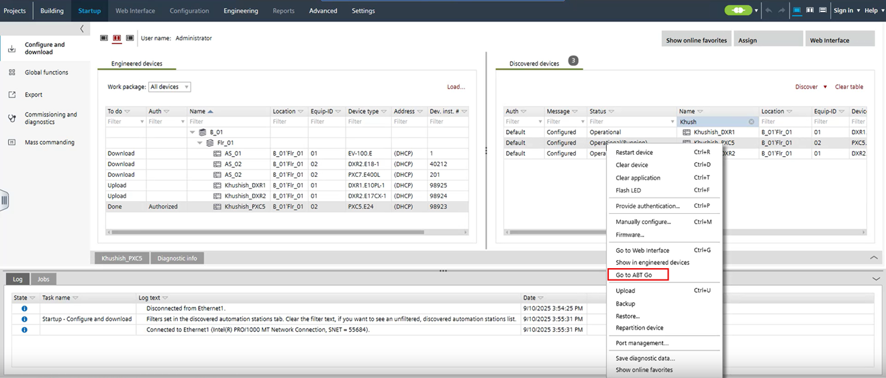

Connecting to ABT Go
Use this procedure to launch ABT Go on a configured device. Launches ABT Go (Windows only) on devices discovered in ABT Site.
Configure and download

Only one ABT Go window instance can be opened at a time through ABT Site.

Supported only for device types:
- DXR1.E
- DXR2.E/PXC3.E
- PXC4.E/PXC5.E/PXC7.E
- EV100E
This functionality does not support:
- MSTP devices
- BACnet/SC connection
- USB connection
- Devices connected via BBMD
- The network interface card on the laptop is configured.
Configuring a network connection - The LAN cable from the commissioning laptop is connected to the network or a USB cable is directly connected to the device.
Connection types and network card settings - If connected through the room unit, wait for the device to restart after a download (15 to 30 seconds).
- ABT Go Windows (same or higher version than ABT Site) must be installed.
- Choose one of the adapter configurations:
- Both applications use a single adapter (Video).
- Both applications use separate adapters (Video).
- Both applications use a single adapter set on multiple IPs (Video).
- Select Startup > Configure and download.
- Select a discovered device in the Discovered devices tab.
- Right-click and select Go to ABT Go.
- Enter your login credentials if prompted.
- ABT Go displays on the device.